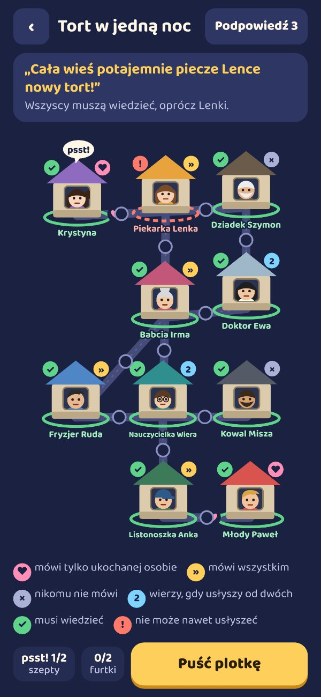
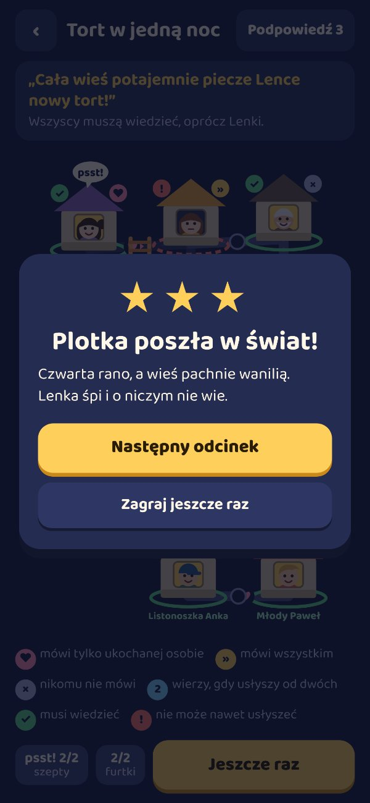

Kto ma to usłyszeć, a kto nie może się dowiedzieć?
Przytulna gra logiczna na drogę do domu. Szepnij plotkę jednemu sąsiadowi i patrz, jak wędruje ogrodowymi ścieżkami Szeptowa. Babcia mówi wszystkim, dziadek nikomu, a wójt nie uwierzy, dopóki nie usłyszy dwa razy.
Wkrótce w Google Play i App Store
Jak się gra
- Przeczytaj dzisiejszą plotkę oraz kto ma ją usłyszeć, a kto nie.
- Dotknij sąsiada, aby mu ją szepnąć.
- Zamknij furtki, żeby nie trafiła do niewłaściwego domu.
- Puść plotkę i patrz, jak wędruje. Każdy sąsiad ma swoje zwyczaje.

Codziennie dwa nowe wieczory
Osiem plotek na wieczór, każda trochę trudniejsza. Około 20 minut, w sam raz na autobus lub pociąg.
Opowieść w odcinkach
Zaginiony tort, tajne oświadczyny i nieznajomy w futrze, w dwóch sezonach.
Jeden kciuk, bez dźwięku
Duże, wyraźne obrazki. Graj na stojąco w tramwaju, przerwij w każdej chwili.
Działa offline
Bez konta i bez internetu. Nowe wieczory pojawiają się same każdego dnia.
Cena
Pobranie za darmo. Pierwszy wieczór każdego dnia i pierwsze trzy odcinki opowieści są za darmo, z krótką reklamą między plotkami. Wiejskie plotki Plus odblokowuje całą opowieść, drugi trudniejszy wieczór każdego dnia i brak reklam: 7 dni za darmo, potem 4,99 € miesięcznie lub 39,99 € rocznie (lub równowartość w Twojej walucie). Dodatkowe podpowiedzi: 5 za 0,99 €. Możesz anulować w każdej chwili w ustawieniach sklepu.
Pomoc i kontakt
Utknąłeś na jakiejś plotce albo masz pomysł na wieś? Napisz do nas, odpowiadamy na każdy e-mail.
parentshelpmy@gmail.com